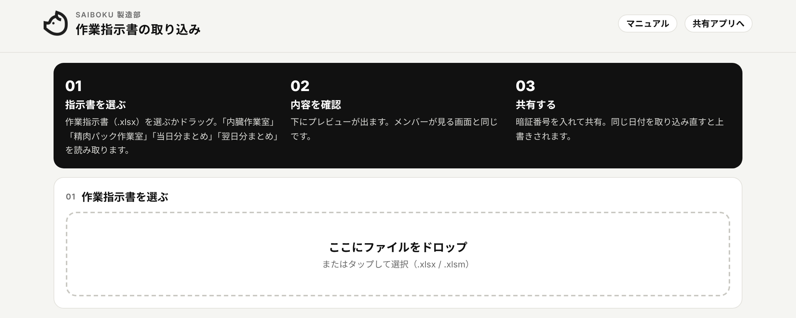
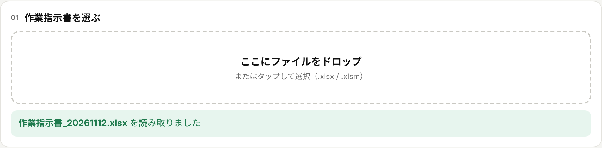
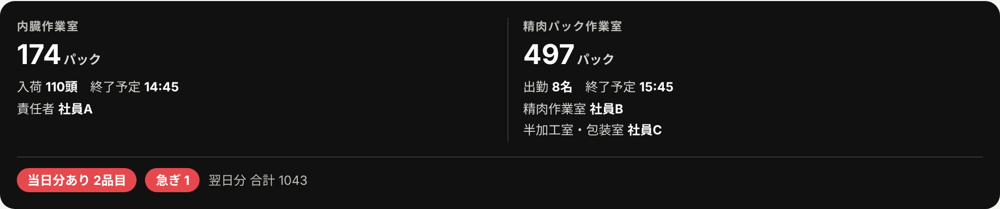
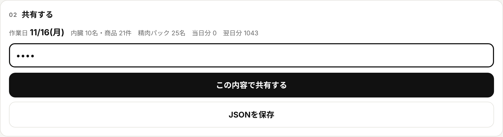
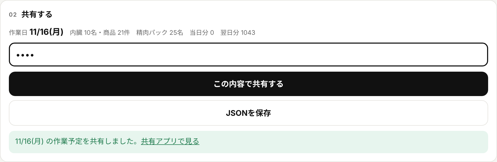

作業指示書の取り込み
マニュアル（社員向け）
作業指示書（Excel）をアプリに取り込んで、メンバーのスマホに「明日の作業予定」を表示するための手順です。
01しくみと流れ
① 指示書を作るいつも通りExcelで作成
→
② 取り込む取り込みページにファイルを入れる
→
③ 確認して共有暗証番号を入れて共有
→
④ メンバーが見るアプリの「明日の予定」に表示
指示書の中から、次の 4つのシート だけを読み取ります。
| シート名 | 読み取る内容 |
|---|---|
| 内臓作業室 | 作業日、入荷頭数、総パック数、作業終了予定、現場責任者、特注・特記事項、昨日の実績、人員配置（名前・勤務時間・時間ごとの作業・休み）、商品別の当日分／翌日分の数、必要原木数 |
| 精肉パック作業室 | 作業日、総パック数、作業終了予定、精肉作業室・半加工室包装室の責任者、特記・連絡事項、出勤人数、昨日の実績、人員配置 |
| 当日分まとめ | 売場ごと（スライサー・HB味噌・内臓・AtoZ・まな板切身・詰め物）の商品と数、急ぎ、賞味期限（D+○） |
| 翌日分まとめ | 同上（翌日分） |
- ファイルは パソコンのブラウザの中だけ で読み取ります。Excelファイル自体はどこにも送られません。送られるのは読み取った内容だけです。
- 読み取った内容はスプレッドシートに日付ごとに保存され、60日を過ぎると自動で消えます。
02いつ・だれが取り込むか
- 指示書ができたらすぐ（前日の終業前まで）に取り込んでください。メンバーは前日のうちに翌日の予定を確認できます。
- 指示書を直したときは、もう一度取り込む だけでOKです。同じ作業日の内容は上書きされます。
- 取り込みには 暗証番号 が必要です。暗証番号は塚越から聞いてください（このマニュアルには書きません）。
03取り込みの手順
取り込みページ（パソコン推奨）
https://s-meat.github.io/meat-portal/extract.html
共有アプリの一番下「作業指示書を取り込む（担当者用）」からも開けます。
- 指示書のファイルを入れる
点線の枠にExcelファイルを ドラッグ＆ドロップ します。枠をクリックしてファイルを選んでもOKです。
- 読み取れたか確認する
緑の帯で「○○.xlsx を読み取りました」と出れば成功です。
画面の下に、メンバーが見る画面と同じプレビューが出ます。作業日・パック数・終了予定・責任者・当日分 が合っているか確認してください。
- 暗証番号を入れて共有する
「02 共有する」に作業日と人数・合計が出ます。暗証番号を入れて「この内容で共有する」を押します。
- 完了
「○/○ の作業予定を共有しました」と出たら完了です。「共有アプリで見る」でメンバーの画面を確認できます。
ポイント暗証番号は一度成功すると、そのパソコンに記憶されます。次からは入力しなくても共有できます。
04指示書を作るときの注意（読み取りのルール）
アプリはセルの位置ではなく、見出しの文字 を目印にして読み取ります。行が増えたり減ったりしても大丈夫ですが、次のことは守ってください。
変えないでください
- 4つの シート名（内臓作業室／精肉パック作業室／当日分まとめ／翌日分まとめ）
- 見出しの文字：「作業終了予定」「総パック数」「入荷頭数」「昨日の実績」「終了時間」「現場責任者」「特注、特記事項」「○○責任者」「特記、その他の連絡事項」「出勤人数」「商品名」「重量目安」「作業予定」「当日分」「翌日分」
- 時間の見出し「7:30～」「8:00～」…の行
- まとめシートの売場見出しの右隣が「当日分」になっている形と、1行目の「賞味D+○の商品」
人員配置の書き方
- A列に名前、B列に勤務時間を 「8：30～14：45（45）」 の形で入れた行を「人」として読みます。勤務時間がない行は読みません。
- 休みの人は、名前の右の欄に「休み」と入れてください（アプリでは「休み」としてまとめて表示）。
- 時間ごとの欄に入れた作業名（パック・マルチ・内臓・挽肉など）が、そのまま色付きで表示されます。
読まないところ
- 各シートの右側（内臓作業室はN列より右、精肉パック作業室はO列より右）にある名簿・作業リスト・メモ欄は読みません。
- 作業日は各シート上部の日付を使います。日付が入っていないと取り込めません。
- 数量が0の商品は、メンバー画面では最初はかくれて表示されます。
05エラーが出たとき
| 表示 | 原因と対応 |
|---|---|
| シートが見つかりません：○○ | シート名が変わっている、または別のファイルです。シート名を元に戻してください。 |
| 作業日（日付）が読み取れませんでした | シート上部の日付が空、または文字になっています。日付を入れ直してください。 |
| Excelファイル（.xlsx / .xlsm）を選んでください | Excel以外のファイルです。.xlsx で保存したものを選んでください。 |
| 暗証番号が違います | 暗証番号を確認してください。変更された場合は塚越に確認してください。 |
| 保存を確認できませんでした | 通信が不安定です。少し待ってからもう一度「共有する」を押してください（同じ日付は上書きなので、二重になりません）。 |
| 読み取りライブラリを読み込めませんでした | ネットにつながっていません。接続を確認してページを開き直してください。 |
| 人が足りない・作業が出ない | 勤務時間の書き方（「8：30～14：45（45）」の形）を確認してください。 |
06メンバーへの案内
- メンバー向けの使い方ガイド：manual.html（QRコード・ホーム画面追加の方法つき）
- 希望休申請は新しいURLに変わりました。前のURLを開くと「URLが変わりました」の案内が出ます。新しいアプリをホーム画面に追加し直すよう伝えてください。
- シフト変更・当日欠勤は紙ではなく、アプリの「シフト変更」から申請する運用です。
07管理者向けメモ
| 項目 | 内容 |
|---|---|
| 共有アプリ | https://s-meat.github.io/meat-portal/（GitHub：S-meat/meat-portal） |
| データの保存・配信 | Apps Script「ミートチームポータル（作業予定API）」／保存先スプレッドシート「ミートチーム 作業予定データ（ポータル用）」 |
| 暗証番号の変更 | Apps Script → プロジェクトの設定 → スクリプト プロパティ → UPLOAD_PIN を書き換えて保存（再デプロイ不要） |
| タブのリンク先の変更 | リポジトリの assets/config.js の LINKS |
| Slack #110（6:50） | Apps Script の ?action=slack でまとめ用の文面を返します。既存のまとめBotへの組み込み、または SLACK_BOT_TOKEN 設定＋setupTriggers 実行で単独投稿（README参照） |
| 希望休申請 | 画面：https://s-meat.github.io/shift/（GitHub：S-meat/shift）／Apps Script はAPI専用。旧URLは案内ページ |
製造部 1課 ミートチーム ／ 画面の写真は見本です（名前は仮のものです）